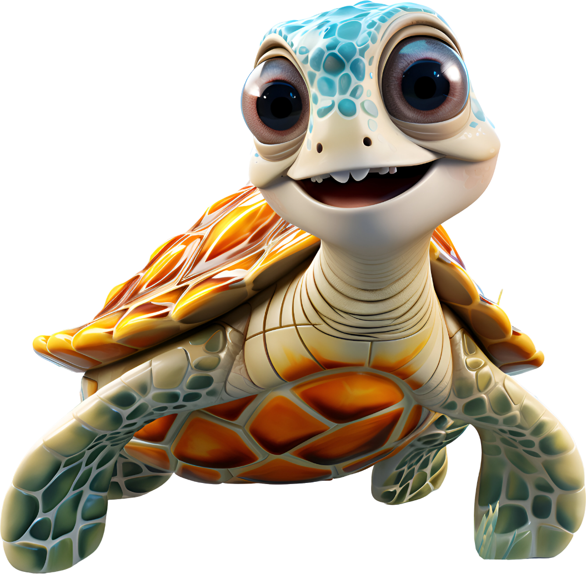

El caparazón de una tortuga forma parte de su cuerpo tanto como nuestro esqueleto del nuestro. El caparazón de las tortugas marinas está formado por más de 50 huesos fusionados... ¡Así que literalmente llevan los huesos por fuera! Como reptiles, las tortugas marinas respiran aire, pero tienen la capacidad de permanecer bajo el agua durante largos periodos de tiempo e incluso duermen bajo el agua. Pueden aguantar la respiración durante ¡cinco horas! Para permanecer bajo el agua durante tanto tiempo, ralentizan su ritmo cardiaco hasta nueve minutos entre latido y latido para conservar el oxígeno. Son animales ovíparos que cavan sus nidos en la tierra, donde llevan a cabo la incubación de los huevos. A pesar de que carecen de dientes, cuentan con un fuerte pico que usan para alimentarse. Además de plantas, también comen insectos, caracoles y lombrices. Existen especies marinas y terrestres.